Content
电与磁
第三课 静电场中的导体
3.1 导体中的电荷分布
- 存在大量自由电荷的物质叫做导体
- 金属 —— 自由电子
- 电解质 —— 正负离子
- 气体（离子化） —— 电子和正离子
- 在静电场的作用下，导体中电荷的重新分布称为静电感应：
- $\overrightarrow{F} = q\overrightarrow{E}_{0}$
- $\overrightarrow{E} = \overrightarrow{E}_{0}+\overrightarrow{E_{i}}$
> $\overrightarrow{E} = 0$
- 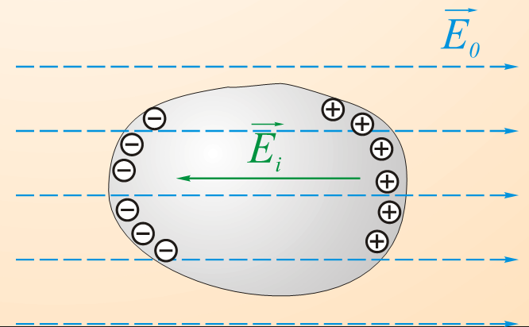
- 1.导体内部的电场为0，表面上的电场沿法线方向
> $E = E_{n}$ $E_{τ} = 0$
- 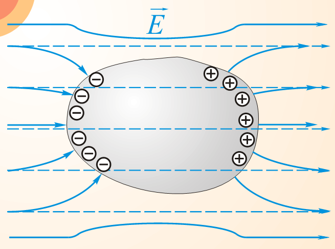
- 2.导体范围内电势相等 > $\frac{d\phi}{dl} = -E_{l} = 0$
- 3.导体的表面是等势的 > $\frac{d\phi}{dl} = -E_{τ} = 0$
- 4.未补偿的（未抵消的）感应电荷分布于导体表面
- 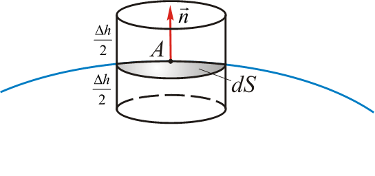 > - $q = \underset{(s)}{\oint}\varepsilon_{0}\overrightarrow{E}d\overrightarrow{S} = 0$ > - $\underset{(s)}{\oint}\overrightarrow{D}d\overrightarrow{S} = q^{своб}{охв}$ > - $\underset{∆h \rightarrow 0}{\lim}\underset{(s)}{\oint}\overrightarrow{D}d\overrightarrow{S} = D{n}dS$ > - $q^{своб}{охв} = \sigma dS$ > - $D{n} = \sigma E_{n} = \frac{\sigma}{\varepsilon \varepsilon_{0}} (3.1)$
- $\overrightarrow{F} = q\overrightarrow{E}_{0}$

3.2 孤导体的电容量
- 孤导体（绝缘导体，隐蔽导体）（уединенный проводник）是指距离其他物体很远，可以忽略其电场影响的导体
- $\sigma = k \cdot q$
- $k = k（x，y，z）$
- $\phi = \frac{1}{4 \pi \varepsilon \varepsilon_{0}} \underset{(S_{пров})}{\int} \frac{\sigma dS}{r} = \frac{q}{4\pi \varepsilon \varepsilon_{0}}\underset{(S_{пров})}{\int}\frac{kdS}{r}$
- 孤导体的电荷 $q$ 与电位 $\phi$ 的比值 $C$,称为该导体的电容.
- $C = \frac{q}{\phi} (3.2)$
> 国际单位：容量 - $1F(Фарад 法拉)
- $1F$ 是这种孤立导体的容量，当向其传递 $1C$ 电荷时，它获得 $1V$ 的电势。
- $C = \frac{q}{\phi} (3.2)$
> 国际单位：容量 - $1F(Фарад 法拉)
- 例题：
- 让我们来求一个位于介电常数为 $ε$ 的均质的，各向同性介质中的孤立导电球的电容。
- $r \geq R$
- $E_{r} = \frac{q}{4\pi εε_{0}r^{2}}$
- $\phi = -\int\limits_{R}^{\infty}E'{R}dr = \frac{q}{4\pi εε_{0}R}$
- $C = 4\pi εε_{0}R (3.3)$
地球的电容：$C = 4\pi\cdot 8.85\cdot 10^{-12} 单位 \cdot 6.4\cdot 10^{6} 单位 = 7\cdot 10^{-4}\Phi = 700мкФ$
需修改
- 让我们来求一个位于介电常数为 $ε$ 的均质的，各向同性介质中的孤立导电球的电容。
3.3 电容器
- 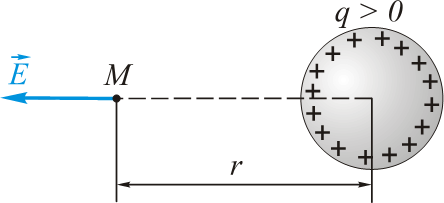 > - $E'_{r} < E_{r} = \frac{q}{4\pi εε_{0}r^{2}}$ > - $\phi' = \frac{q}{C'} = \int\limits_{R}^{\infty}E'_{R}dr < \int\limits_{R}^{\infty}\frac{qdr}{4\pi εε_{0}r^{2}} = \frac{q}{4\pi εε_{0}R = \frac{q}{C} = \phi$ > - $C' > C$
- 未连接的导体的电容量始终大于单独使用时同一导体的电容量
- 电容器是由两个导体（称为极板）组成的系统，由电介质层隔开
- 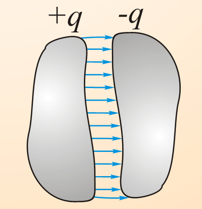
- 一个极板的电荷与极板之间的电势差的比值称为电容器的电容
- $C = \frac{q}{\phi_{1} - \phi_{2}} (3.4)$
- 例子：
- 1.扁平电容器
- $0 \le x \le d$
- 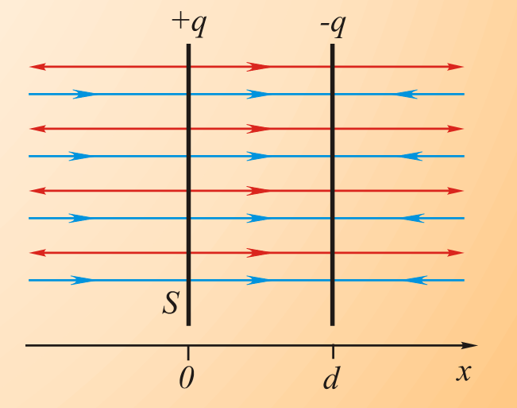 > - $E_{x} = \frac{\sigma}{2 \varepsilon \varepsilon_{0}} + \frac{\sigma}{2 \varepsilon \varepsilon_{0}} = \frac{\sigma}{\varepsilon \varepsilon_{0}}$ > - $\sigma = \frac{q}{S}$ > - $\phi_{1} - \phi_{2} = \int\limits_{0}^{d}E_{x}dx = \frac{\sigma}{\varepsilon\varepsilon_{0}}\int\limits_{0}^{d}dx = \frac{qd}{\varepsilon\varepsilon_{0}S}$
- $C = \frac{\varepsilon \varepsilon_{0} S}{d}$ (3.5)
- 2.球形电容器
- 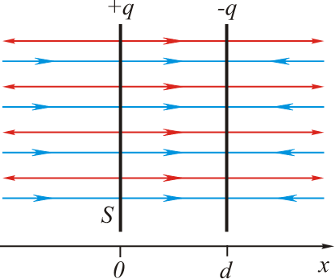
- $E_{r} = \frac{q}{4 \pi\varepsilon\varepsilon_{0}r^{2}}$
- $\phi_{1} - \phi_{2} = \int\limits_{R_{1}}^{R_{2}}E_{r}dr = \frac{q}{4\pi εε_{0}}\int\limits_{R_{1}}^{R_{2}}\frac{dr}{r^{2}} = \frac{q}{4\pi εε_{0}}(\frac{1}{R_{1}} - \frac{1}{R_{2}})$
- $C = \frac{4\pi\varepsilon\varepsilon_{0}R_{1}R_{2}}{R_{2} - R_{1}}$ (3.6)
- 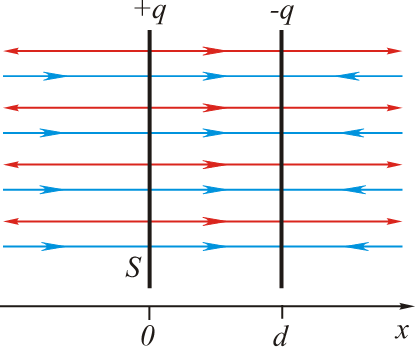
- 3.圆柱形电容器
- 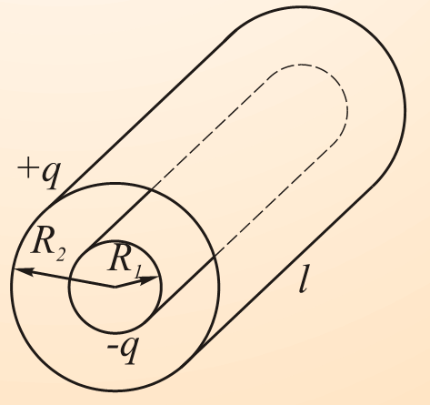
- $τ = q/l$
- $E_{r} = \frac{τ}{2\pi\varepsilon \varepsilon_{0}r} = \frac{q}{2\pi\varepsilon\varepsilon_{0}lr}$
- $\phi_{1} - \phi_{2} = \int\limits_{R_{1}}^{R_{2}}E_{r}dr = \frac{q}{2\pi εε_{0}l}\int\limits_{R_{1}}^{R_{2}}\frac{dr}{r} = \frac{q}{2\pi εε_{0}l}\ln{\frac{R_{2}}{R_{1}}}$
- $C = \frac{2\pi\varepsilon\varepsilon_{0}l}{\ln{(R_{2}/R_{1})}}$ (3.7)
- 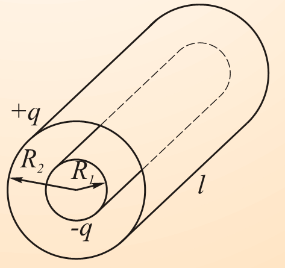
- 1.扁平电容器
- 击穿电压(击穿电压)是指电容器的电极之间的最小电位差，在这个电位差上，通过电容器中的介电层发生放电。
电容器的连接
- 并联(Параллельное соединение)
- 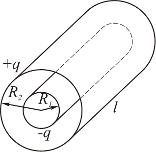 > - $q_{i} = C_{i}\cdot ∆\phi$ > - $q = C\cdot ∆\phi$ > - $q = \sum_{i=1}^{n}C_{i}\cdot\phi = ∆\phi\cdot\sum_{i=1}^{n}C_{i}$
- $C = \sum_{i=1}^{n}C_{i} (3.8)$
- 串联(Последовательное соединение)
- 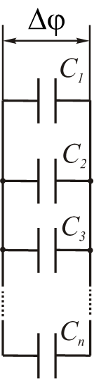 > - $∆\phi_{i} = \frac{q}{C_{i}}$ > - $∆\phi = \sum_{i=1}^{n}∆\phi_{i} = \sum_{i=1}^{n}\frac{q}{C_{i}} = q\cdot\sum_{i=1}^{n}\frac{1}{C_{i}}$ > - $∆\phi = \frac{q}{C}$
- $\frac{1}{C} = \sum_{i=1}^{n}\frac{1}{C_{1}} (3.9)$
 > - $∆\phi_{посл} = n\cdot ∆\phi_{пар}$
> - $∆\phi_{посл} = n\cdot ∆\phi_{пар}$